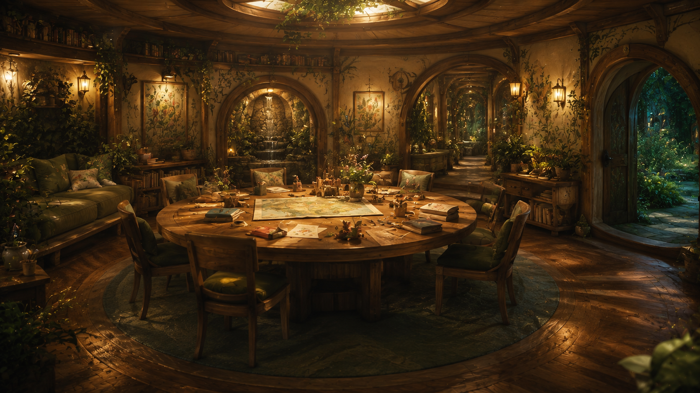
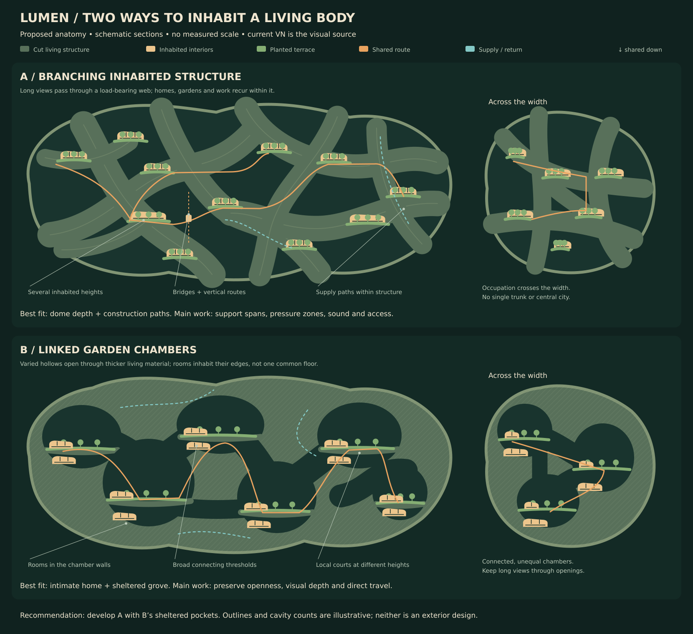
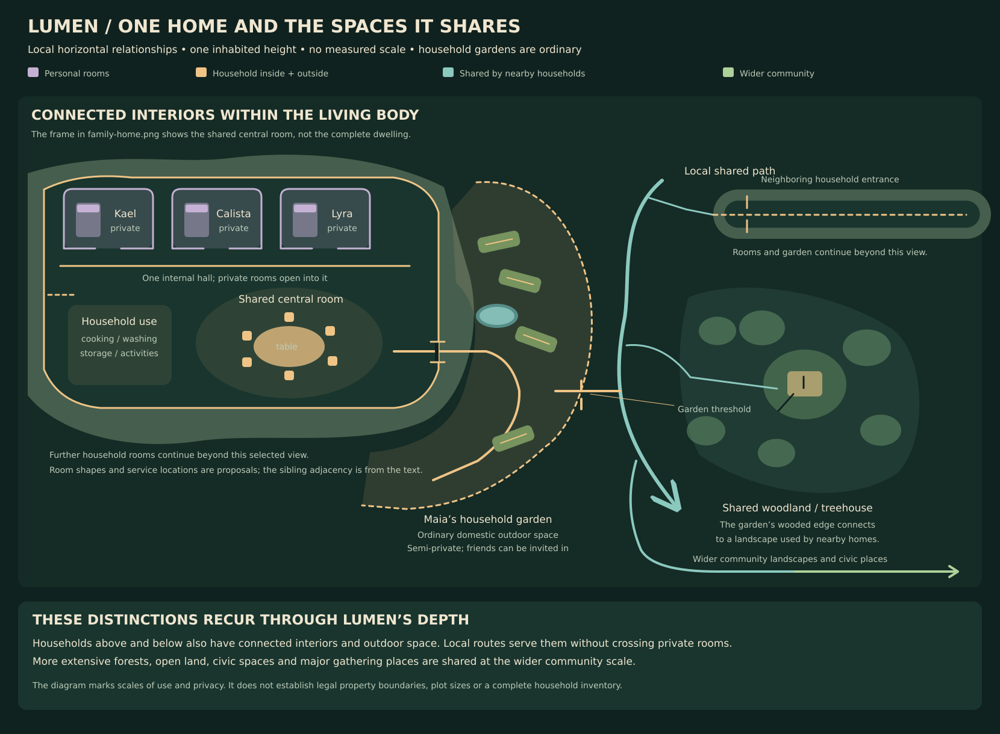
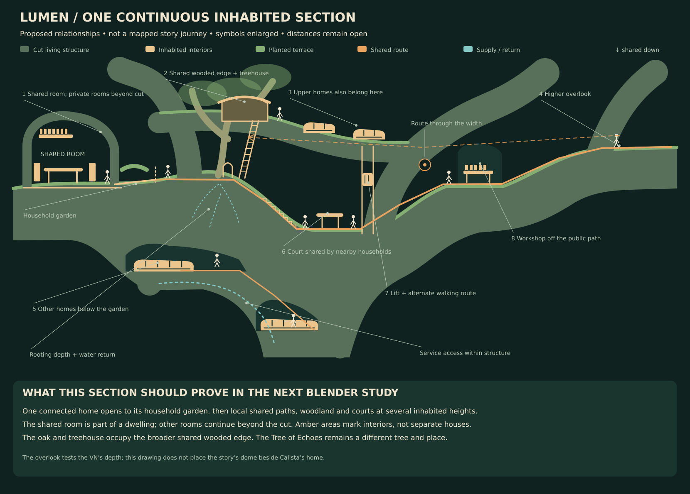

Current VN references
These are the original runtime image files. Numbered annotations are separate page overlays. Select a reference, then a marker to highlight the corresponding observation. Older outside artwork is not part of this core set.

Visible evidence
Proposed interpretation
Not established by this frame
Source scope and provenance
The image definitions display these files at 1920 × 1080 using a cover fit. This page follows that image framing; it does not simulate dialogue, actors or the VN interface. The associated scene code and action CGs supply the staging context. Exact source paths, line locators and SHA-256 fingerprints are recorded in references.json. Fingerprints identify the inspected revision; they are not a claim of canon approval or geometric accuracy.
These sixteen annotated plates are a selection from the 49-image spatial register. The reference atlas includes Arin’s and Soren’s distinct workshops, Selene’s music room, Dorian’s library, Sage’s room and Cassia’s home. Current author direction and VN visuals take precedence over the old external-reference ranking in the production art guide.
Two anatomies, one lived-in world
A distributes rooms, terraces and routes through branching structure. B gives more space to a thick living matrix containing connected garden hollows. Amber areas represent connected interiors, not rows of individual houses. Each has a transverse sketch: occupation must continue through the width, too.

Open anatomy drawing at full sizeA with B’s sheltered pockets remains a composition to investigate after the complete local program is accounted for. These diagrams do not establish that the rooms and routes fit, or determine the exterior silhouette, cavity count or structural capacity.
One home, household outdoors, and shared spaces beyond
Maia’s garden is ordinary household outdoor space. The broader woods and treehouse area are more shared. Personal rooms, household interiors and outdoors, local shared spaces, and wider community places have different uses and thresholds. A home is one connected dwelling within Lumen’s body; its garden does not imply unusual wealth.
The household program includes Arin’s workshop, Selene’s music room, Dorian’s library and Sage’s room; each resident’s privacy; cooking, art and practical support; and garden work outdoors. Exact attachments and compatible overlaps remain open. The garden planting bed must retain its view of the oak ladder, and both the upper treehouse and the furnished lower refuge need usable space.
Withdrawn household and neighborhood sketches
Retained to make the correction reviewable. Neither drawing accounts for the complete program. The neighborhood drawing also leaves the explicit garden-to-ladder sightline untested. “Rooms beyond the cut” does not resolve these omissions.

Open withdrawn household sketch
Open withdrawn neighborhood sketchExplore population and resource allowances
Compare 6,000 and 18,000 embodied residents during Calista’s childhood. The author considers both possible for young Lumen, with about 18,000 as the upper limit for that period. The exact census remains open within this working band; later growth is a separate question. Areas accumulate through many local inhabited heights.
The area allowances predate the recovered household program. Reassess them from the required spaces and their uses before deriving a layout or vessel size; the calculator only shows consequences of its inputs.
Other uses stay at 175 m²/person: connected domestic interiors 60, civic 25, services 30, shared transport 20 and reserve 40. The outdoor allowance includes household gardens, local shared landscapes and wider community grounds; their individual shares remain open. Productive beds are counted once.
Growing power is an illustrative daily-average supplied input, not a measured cultivation requirement. Total heat from the body, people, integrated minds, gravity, industry and propulsion is still unknown.
The gathering figure uses 2 m²/person of net standing/gathering surface. It is not a crowd-capacity result: the stage, planting, usable galleries, circulation and approaches still need a real layout. The manuscript’s whole-community festival is an unresolved constraint. Revisit population before forcing the familiar stage and court to become enormous.
Assumptions and equations
Usable surface = people × summed area allowances. Growing input = people × productive surface per person × average supplied power. The radiator comparison treats that input as a heat load and uses Q = εσAT⁴, with emissivity 0.9, negligible sink temperature and an unobstructed view of cold space. It omits environmental heating, self-obstruction, other loads and heat-pump work. A hotter radiator cannot passively cool a cooler habitat.
The proposed body search box is 1.5–3 km long, 1–2 km wide and 0.8–1.6 km deep. The approximate ellipsoid volumes are 0.63–5.03 km³. This is an independent composition test; surface-area arithmetic does not derive an exterior or prove that this envelope is necessary.
Full rationale, research citations and limits are in Scale and Physics. Inputs are in study-data.json.